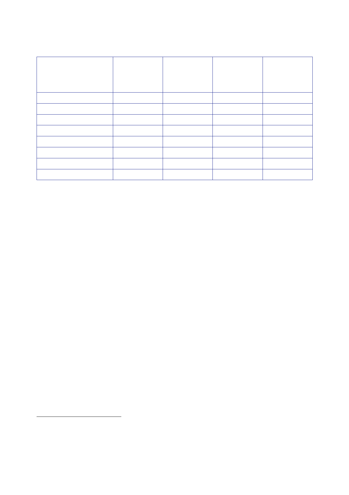

The Report
of the Iraq Inquiry
2001/02
2002/03
2003/04
2004/05
2005/06
2006/07
2007/08
2008/09
Near‑cash
expenditure
26.1
27.3
29.3
29.5
30.6
31.5
33.5
36.4
Near‑cash
expenditure
at
2008/09
31.4
31.8
33.2
32.5
33.1
33.0
34.2
36.4
£bn change
on
previous
year,
in real
terms
2.4
0.5
1.4
‑
0.7
0.6
‑
0.1
1.2
2.2
% change
on
previous
year,
in real
terms
8.4
1.5
4.4
‑
2.1
1.8
‑
0.2
3.6
6.5
477.
Mr Brown
told the Inquiry on 5 March 2010 that the defence budget had
risen
in real
terms (i.e. after adjusting for inflation) every year during the
period covered by
the
Inquiry;285
and that
the budgets allocated in the 2002, 2004 and 2007
Spending
Reviews had
provided increases in “real terms spending” of 1.2 percent, 1.4
percent and
1.5 percent
respectively.286
478.
Mr Brown
wrote to the Inquiry on 17 March 2010, to clarify that while
defence
expenditure
had risen every year in cash terms, it had not risen every year in
real
terms.287
Mr Brown
provided figures for the MOD’s core budget in near‑cash and
real
terms, and
total defence expenditure (including NACMO) for the period 2001/02
to
2009/10.
Those figures are set out in the table below (the percentage
variations between
years have
been added by the Inquiry).
479.
The figures
provided by Mr Brown show that:
•
The MOD’s
core budget fell between 2001/02 and 2002/03 and
between
2006/07 and
2007/08, and rose in all other years.
•
Defence
expenditure, which includes a number of significant additional
factors,
including
NACMO, fell between 2003/04 and 2004/05 and between 2005/06
and
2006/07,
and rose in all other years.
284
Adjusted
using GDP deflator as at June 2009.
285
Public
hearing, 5 March 2010, page 120.
286
Public
hearing, 5 March 2010, page 119.
287
Letter
Brown to Chilcot, 17 March 2010, [untitled].
522